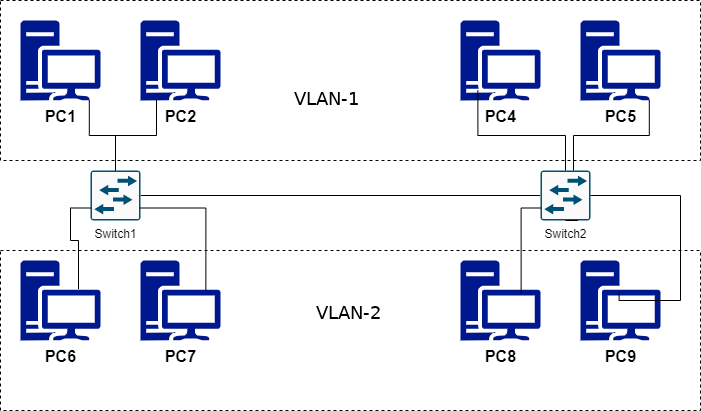

6. Redes virtuales (VLANs)
1. ¿Qué es una VLAN?
VLANs acrónimo de virtual LAN, «red de área local virtual», es un método para crear redes lógicas independientes dentro de una misma red física. Dentro de un switch pueden coexistir varias redes virtuales.
Esto permite crear redes (lógicas) independientes dentro de una red (física) más grande. Tienen las siguientes características:
- Las modificaciones y la configuración es sencilla, en función del dispositivo hardware será más o menos escalable (características de gestión de tráfico, número de bocas, velocidades TX/RX) y ampliable a equipos similares.
- Aportan gran fiabilidad y confianza, ya que ni la seguridad, ni la disponibilidad se ven comprometidas.
1.1 Características de las VLAN
- Crean una topología virtual independiente de la física.
- Permiten agrupar a los usuarios en grupos de trabajo flexibles.
- Funcionan en los niveles 2 y 3 de OSI.
- La comunicación entre VLANs requiere enrutamiento de capa 3 (routers).
- Permiten controlar el tamaño de los dominios de broadcast.
- Necesitan administración.
- Pueden ayudar a aumentar la seguridad de la red.
1.2 Segmentación con VLAN
- Cada usuario se conecta al switch VLAN más próximo físicamente.
- Se definen varias VLANs en los switches.
- Los usuarios se agrupan en las VLANs, según criterio del administrador.
- La pertenencia de un usuario a una VLAN no depende del cableado físico.
- Cada VLAN es un dominio de broadcast.
- El router permite la comunicación entre VLANs.
2. ¿Cómo funciona?
Para las VLAN se emplea la gestión del software para conectar ordenadores y servidores a través de una red. Por lo tanto no se necesita cambiar el hardware ya que las modificaciones se hacen a través del software.

Figura 1. Vlan.
Para crear una VLAN se necesita un Switch de nivel 2 o nivel 3, diseñados para trabajar con VLAN. Estos switches, a diferencia de los utilizados comercialmente para redes básicas como las redes domésticas, son gestionables, ofrecen opciones de configuración avanzada y están más orientados al mundo profesional.
Además, dentro de los switches se pueden encontrar una gran variedad, de diferentes marcas, funcionalidades y precios, por lo que hay que quedarse con la idea general que a través de un switch gestionable se podrán configurar distintos tipos de VLAN, que en la práctica son tres:
- VLAN basada en puerto: Se configuran las "bocas" necesarias del switch para que se enruten a través de un puerto. Esto se puede hacer con 1 o más dispositivos finales (portátiles, periféricos, etc.). Por este tipo de enlaces solo pasa el tráfico de una VLAN.
- VLAN basada en etiquetas: Configuración dinámica de la información, a través de TAGs (etiquetas), por lo que cada trama esta identificada (tag) y corresponde con una VLAN.
- VLAN hibrida: Puerto más etiqueta, en la práctica si el dispositivo lo permite se usa esta solución mixta que combina ambas técnicas, la comunicación dentro del switch se realiza a través de puertos asignados, mientras que la comunicación entre más dispositivos se basa en etiquetas.
2.1 ¿Cómo se envía la información a través de una VLAN etiquetada?
Cuando un switch recibe una trama, lee el campo de la etiqueta de VLAN y lo compara con los identificadores de VLAN que tiene asociados a cada uno de sus puertos, distribuyendo la trama por el puerto correspondiente (nunca por el resto de puertos).
Enlaces entre dispositivos
- Troncales: son las conexiones entre dispositivos para llevar tramas de más de una VLAN, bien entre un switch y otro switch, bien de un switch a un router o incluso directamente con un servidor (es necesario que su interfaz de red soporte "trunking"). Se configura en uno o más puertos de los dispositivos con la finalidad de conectar distintas VLANs.
Estas conexiones se basan en estándares de protocolos como IEEE 802.1Q que permite a varias VLAN compartir una misma red física. Para diferenciar el tráfico de cada VLAN se utiliza el etiquetado dentro de cada trama (802.1Q Tag).
Aunque se ha comentado que es un estándar (IEEE 802.1Q), su configuración puede variar en función del dispositivo, por lo que es importante entenderlo conceptualmente, para poder aplicarlo a los dispositivos comerciales (CISCO, D-Link, etc.).
3. Ventajas y configuraciones VLAN
La ventaja de una VLAN frente a una red tradicional es que se puede dividir una LAN en varias VLAN más pequeñas, flexibles y seguras. Tiene las siguientes características:
- Permite configuraciones más flexibles, normalmente basadas en el software de gestión del dispositivo en cuestión.
- Permite el control de la red a un grupo determinado de usuarios o equipos e impide la visibilidad entre redes de distinto propósito (gestión y administración de una empresa, producción, sistemas IT, etc).
- Permite mejorar el rendimiento para cada red, el tráfico interno no circula a través de toda la red sino que se dirige a la VLAN correspondiente reduciendo el tráfico y el consumo de ancho de banda.
3.1 Configuraciones VLAN
{kind=link}
Figura 2. Esquema Vlan.
3.2 Tipos de VLAN
- VLAN predeterminada. Todos los puertos del switch están asociados a la misma. No se puede eliminar ni modificar. Se recomienda desasociar los puertos que se utilicen de la misma, para evitar brechas de seguridad.
- VLAN estáticas basadas en agrupación por puertos. Se asocian los nodos empleando los puertos del switch. Cada VLAN incluye los equipos que están conectados a los puertos concretos de cada switch. Es de fácil implementación pero difícil de administrar. Cambiar un equipo de puerto o de switch implica la reconfiguración de la VLAN.
- VLAN dinámicas basadas en agrupación por MAC. Los nodos se agrupan de forma lógica (especificando la dirección MAC). Cada VLAN engloba los equipos que entran en un conjunto de direcciones MAC, con independencia del puerto al que estén conectados del switch.
- Mejora la seguridad y además, como se trabaja con direcciones MAC, si se cambia un equipo de lugar, no hace falta reconfigurar la VLAN. No obstante si se usa otro equipo, hay que añadir su MAC a la configuración.
- VLAN dinámicas basadas en agrupación por tipo de protocolo. Consiste en segmentar las VLAN por tipo de tráfico que transmiten, por ejemplo si hablamos de tráfico IP una VLAN dedicada al tráfico del mismo y otra al de IPX.
- VLAN dinámicas basadas en agrupación por direcciones IP. Los nodos se agrupan según la dirección IP. Con un funcionamiento similar al de agrupación por MAC, pero es un poco más flexible, ya que las IP no son exclusivas de cada equipo. No obstante, para crear este tipo de VLAN se necesita un tipo de switch que trabaja en el nivel 3 de red.
4. ¿Cómo se configura una VLAN?
En la siguiente esquema, se identifican las etapas que intervienen en la configuración de una VLAN.
{kind=link}
Figura 3. Etapas de configuración VLAN.
5. Referencias
Obra publicada con Licencia Creative Commons Reconocimiento No comercial Compartir igual 4.0